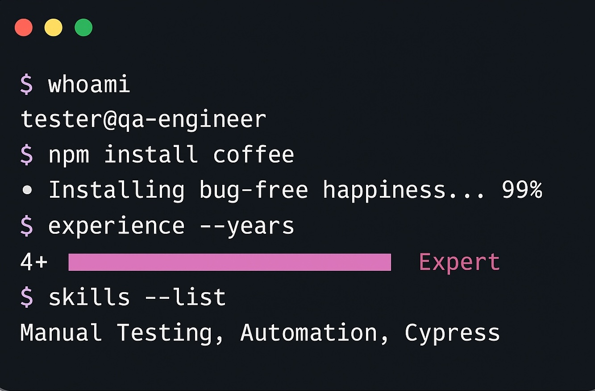
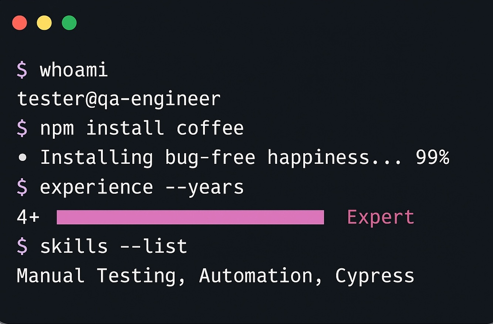

About me
I'm a passionate QA Engineer with experience in both manual testing
and test automation. I love diving deep into applications to find
bugs and ensure quality. My background in testing has given me a
unique perspective on user experience and how things should work
from an end-user standpoint.
Currently, I'm expanding my skills by learning frontend development
- specifically HTML and CSS. I believe this knowledge will make me
an even better tester, as I'll understand the structure and styling
of the applications I test.
 
